Des réalisations qui montrent le niveau de finition, du site vitrine à l'outil métier.
MY BUSINESS LIFE conçoit des expériences digitales capables de présenter une marque, convertir un visiteur
et transformer une organisation métier en interface claire.
Trois cas concrets pour illustrer les sujets traités : image de marque, parcours de conversion,
espace applicatif, tableaux de bord et fonctionnalités métier.
sinatech-av.comEn savoir plus sur Sinatech AV
Positionnement, prestations et 3 captures du site
Le projet
Une vitrine immersive pour une expertise audiovisuelle.
L'expérience installe immédiatement l'univers de marque et guide le prospect vers une demande
de devis. L'offre technique devient lisible sans perdre son caractère visuel.
Secteur
Audiovisuel
Format
Site vitrine
Objectif
Contact et devis
Identité
Un premier écran sombre et immersif qui crédibilise l'activité.
Prestations
Captation, vidéo, sonorisation et streaming organisés pour la lecture.
Conversion
Des accès au devis et au contact présents dès la navigation.
Accueil et promesse
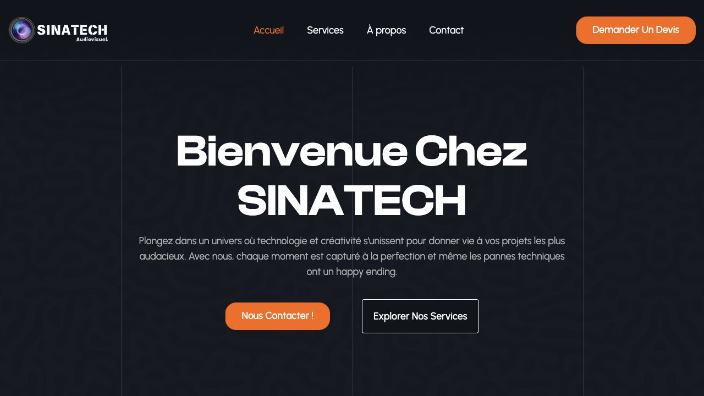
Univers visuel
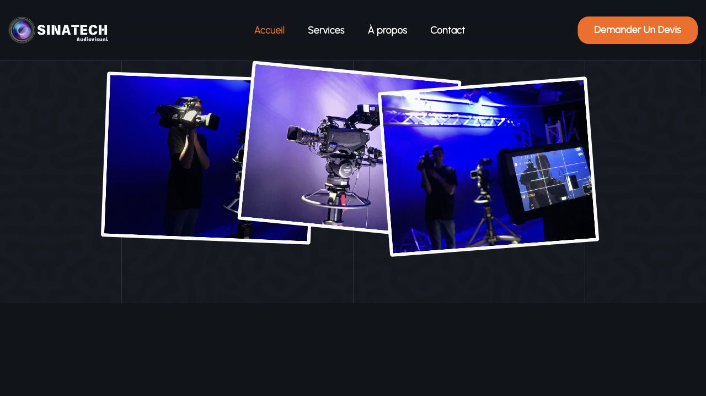
Prestations
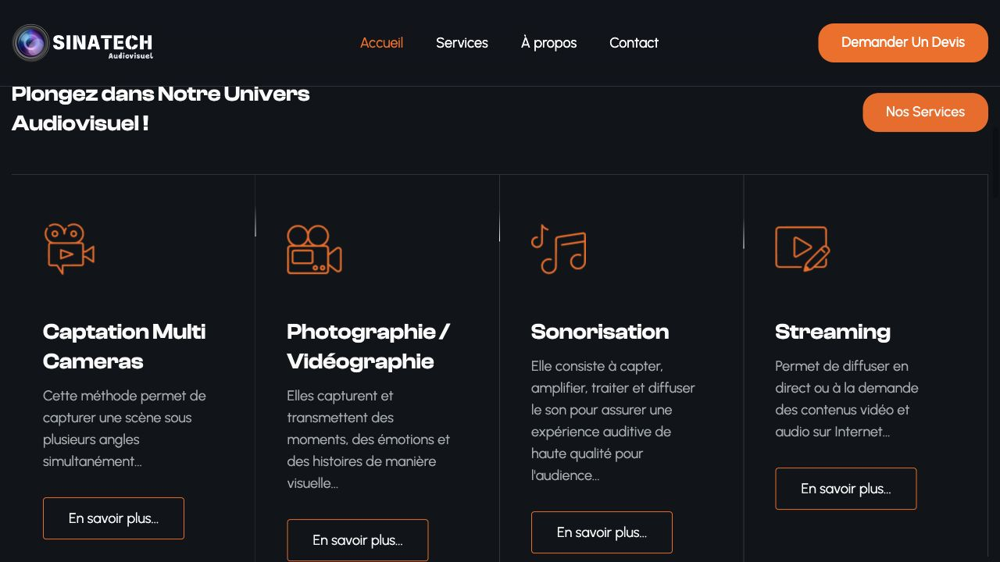
Parcours contenu
MyBrainMotion
Une expérience claire pour présenter des formations, guider les profils et rendre l'offre accessible
dès les premiers écrans.
mybrainmotion.frEn savoir plus sur MyBrainMotion
Parcours formation, accompagnement et 3 captures du site
Le projet
Clarifier l'offre de formation et faciliter l'orientation.
Le site met en avant les profils accompagnés, les univers de formation et le chemin vers un
dossier financé. Le visiteur comprend rapidement l'offre et son prochain pas.
Secteur
Formation
Format
Site catalogue
Objectif
Orientation
Offre
Des catégories accessibles : créativité, sécurité, programmation et bureautique.
Parcours
Un déroulé pédagogique du besoin jusqu'au lancement de la formation.
Confiance
Une présentation sobre, humaine et adaptée à l'accompagnement.
Accueil
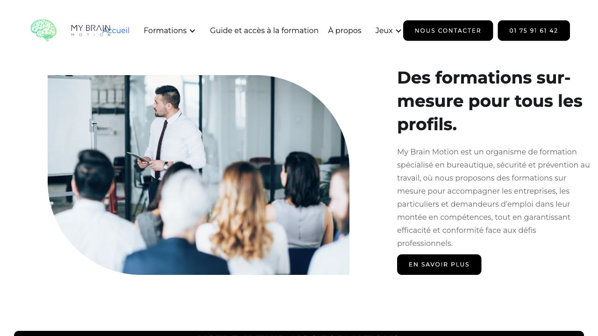
Catalogue
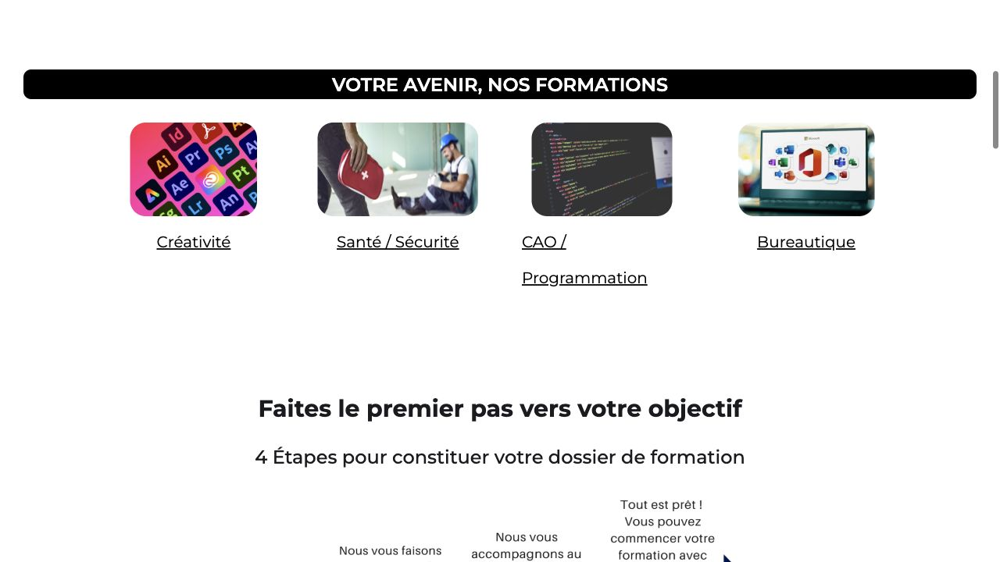
Accompagnement
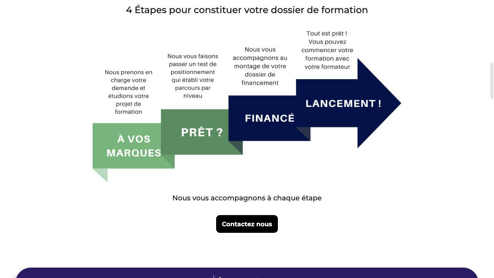
Application métier SaaS
MyBusinessLife App
Une suite applicative pour orchestrer les opérations : modules métier, accès par rôle,
CRM, devis, factures, interventions, POS, abonnements et tableaux de bord.
app.mybusinesslife.frEn savoir plus sur MyBusinessLife App
Modules métier et 5 vues de démonstration publique
Le produit
Orchestrer l'activité dans un cockpit modulaire.
La vitrine applicative présente une suite métier conçue pour réunir pilotage, facturation,
interventions, transport, achats, documents et POS dans une expérience cohérente.
Type
Application SaaS
Surface
Modules métier
Accès
Par rôle
Pilotage
CA, priorités et tâches à traiter depuis un dashboard assisté.
Facturation
Présentation d'un flux conforme, des documents prêts et des paiements liés.
Terrain
Interventions, techniciens, signatures, stock embarqué et planning.
Commerce et POS
Tickets, panier moyen, commandes et état de service en un écran.
Captures issues de la démonstration produit publique de l'application.
Présentation de la plateforme
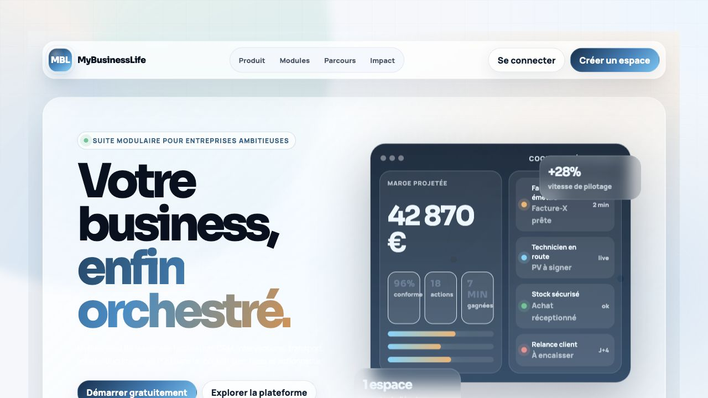
Dashboard assisté
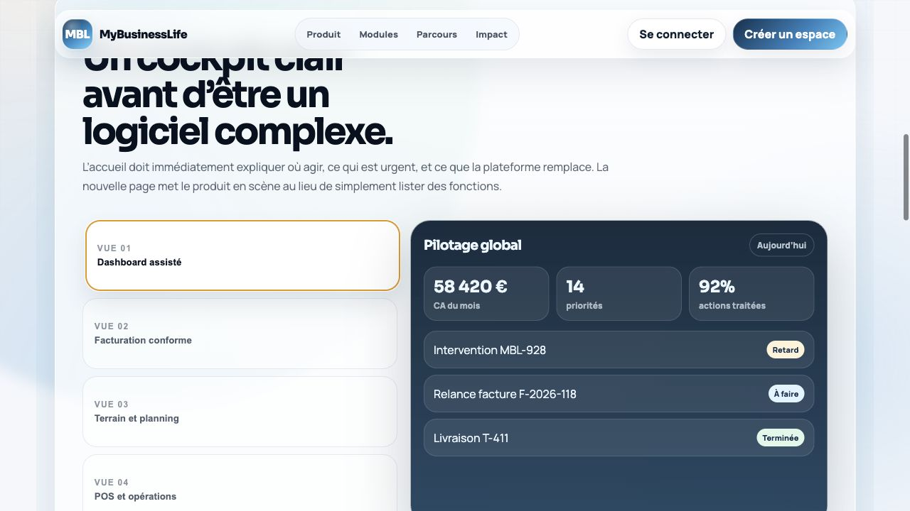
Facturation
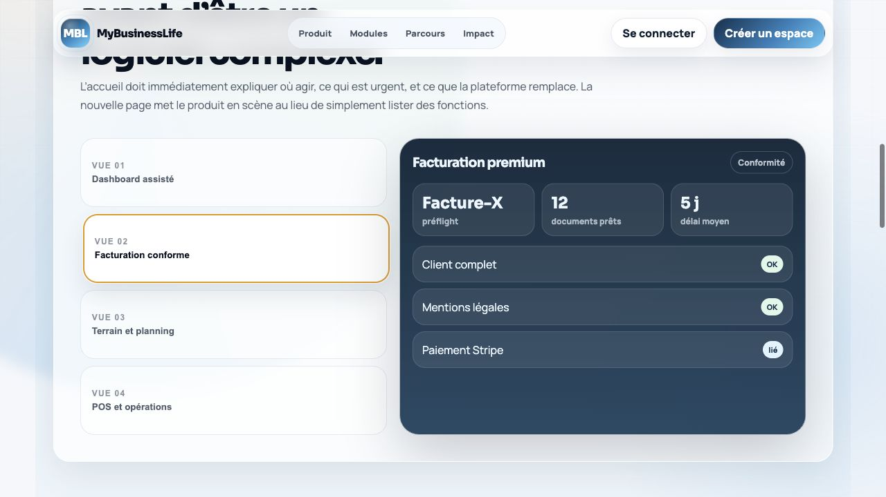
Terrain et planning
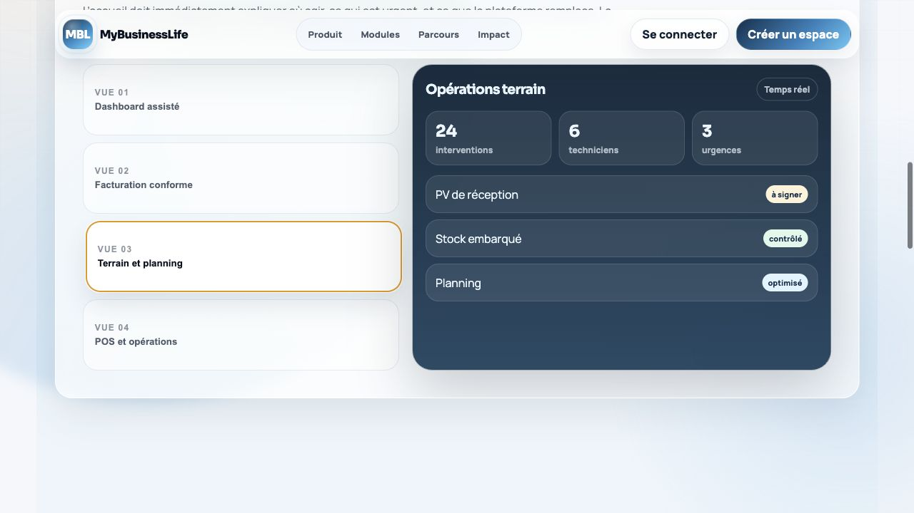
POS et opérations
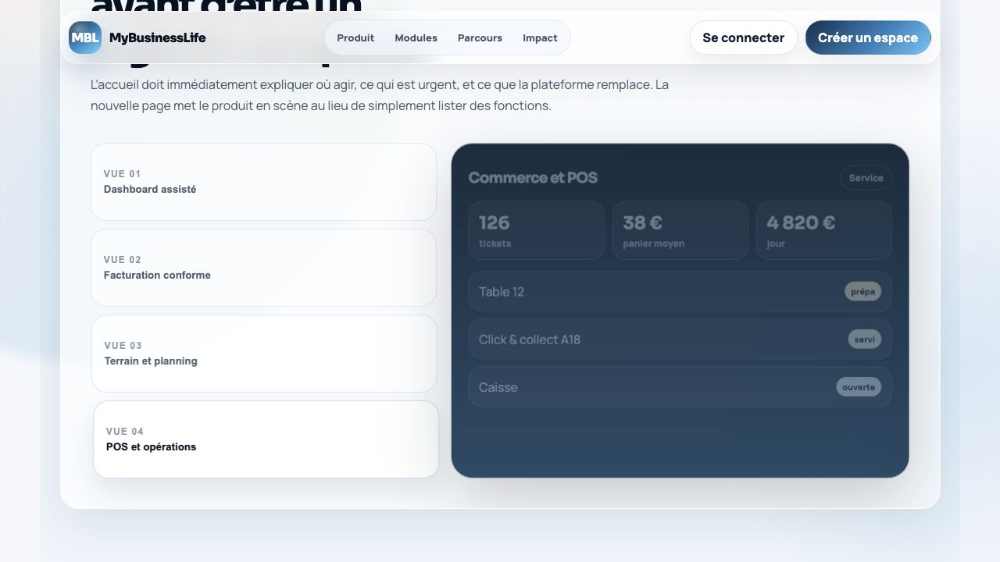
Ce que cela démontre
Un même niveau d'exigence sur le fond, l'interface et l'exploitation.
Le portfolio montre autant la capacité à faire beau que la capacité à structurer une vraie logique métier.
01
Positionnement
Clarifier l'offre, la promesse et les preuves avant de designer.
02
Expérience
Construire une lecture simple, même quand le métier est technique.
03
Fonctions métier
Transformer un processus en interface utilisable au quotidien.
04
Évolution
Préparer une base propre pour ajouter des pages, modules ou automatisations.
Votre projet
Vous voulez une présence ou un outil qui montre ce même niveau de maîtrise ?
Expliquez le site, l'application ou le parcours que vous imaginez. On transforme l'idée en trajectoire claire.